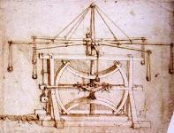

Leonardo thought of it first...
I was reading through the enormous (and enormously wonderful) Leonardo Da Vinci: The Complete Paintings and Drawings by Frank Zollar and Johannes Nathan. There is a large section on fascinating catapult-like devices that would make great ideas for the t-shirt hurling contest. In particular, the rotary device in this picture bears a certain resemblance to the gizmo that the Australians put together. There's nothing in the picture that looks like a credible release mechanism. It would be awfully hard to aim. I doubt that it was ever actually built. Maybe the Australians can go back in time and give Leonardo some solinoids?There was also this interesting variation on the trebuchet. Rather than having the counterweight mounted pendulum-like on the end of the arm, it is dangling from a wheel. The interesting effect this has is that the force accellerating the rotation of the arm does not diminish as the arm approaches vertical. Could be a fascinating tweak to explore. [ a note about the movie: I copied the drawing from The Complete Paintings and Drawings, Photoshoped it into layers, built a little model using Lightwave ]
| July 12, 2005 |